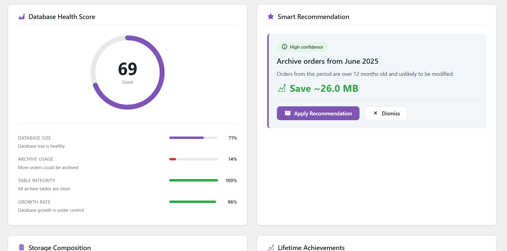
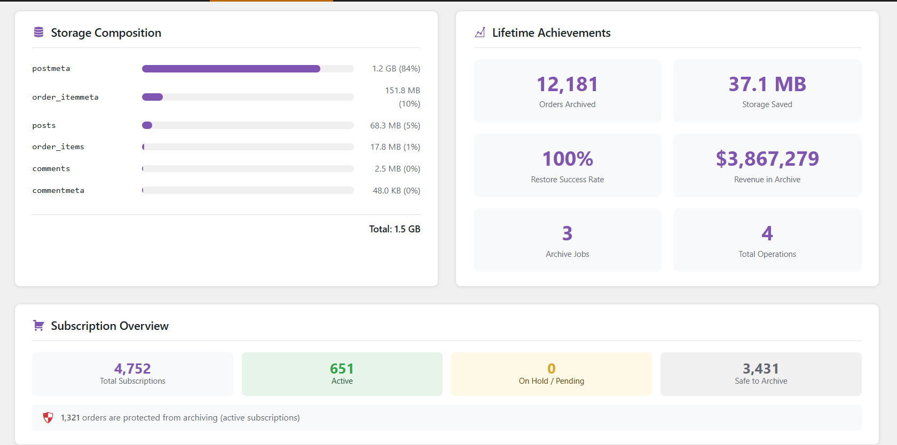
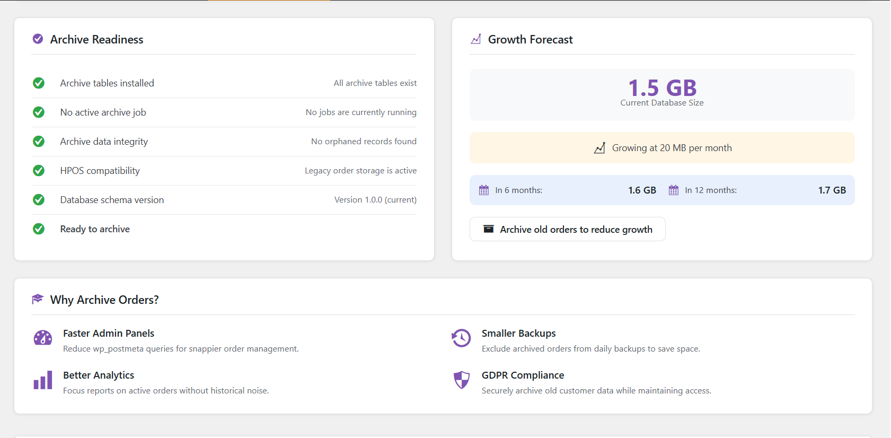
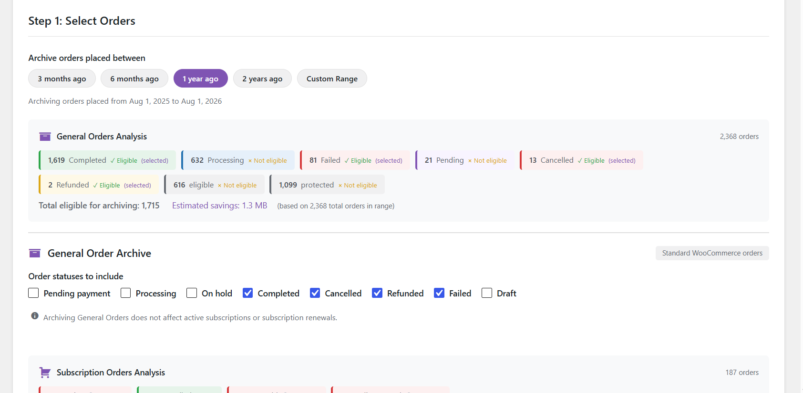
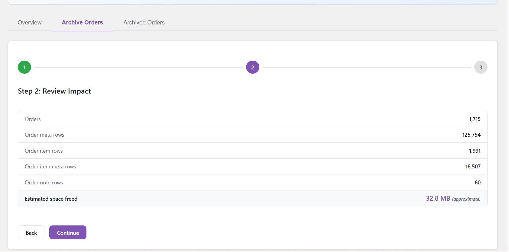
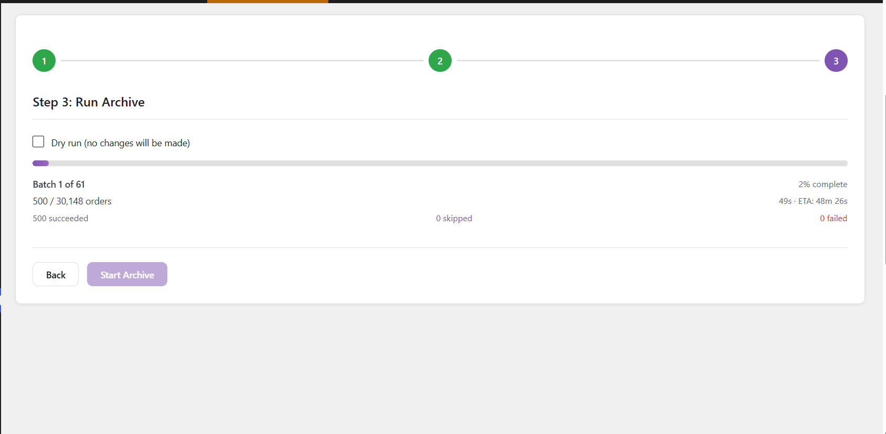
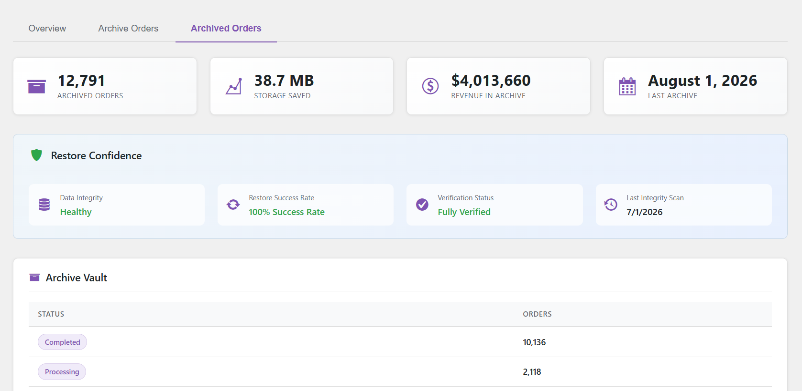
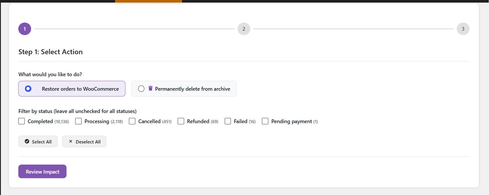
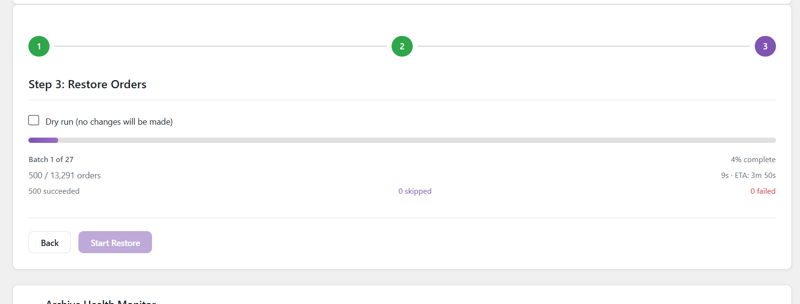

Order Archive Manager moves old orders out of your live tables into dedicated archive tables — inside database transactions, verified before anything is deleted, and fully restorable whenever you need them back.
Every archive operation runs inside a database transaction. Nothing is deleted from your live tables until the copy is verified complete.
Choose which order statuses to archive and set a date cutoff. Run a dry run first to see exactly how many orders match.
Orders are copied row by row into archive tables. If anything fails mid-copy, the transaction rolls back automatically — your original data stays untouched.
Row counts are checked between source and archive before a single live row is removed. No match, no delete.
Archived orders can be restored back to WooCommerce at any time, with original IDs, meta, items, notes, and refunds intact.
All features ship in the free plugin — no premium tier, no feature gates.
Orders move to 7 separate archive tables, not just a status change. Live tables stay lean.
Restore any archived order back to WooCommerce with its original ID, meta, line items, notes, and refunds.
Run the full archive process inside a transaction, then roll it back. Preview exactly what would happen — nothing is changed.
See the real size of your WooCommerce order tables and how much space archiving will recover.
A weighted score across DB size, archive coverage, table integrity, and growth rate — cached and refreshed automatically.
Scans archive tables for orphaned rows — meta, items, or notes referencing orders that no longer exist.
Orders linked to active WooCommerce Subscriptions are automatically skipped during archiving.
Refund posts and their meta are archived alongside the parent order — nothing gets left behind.
Every archive, restore, and delete is recorded with timestamps, order counts, and status — including dry runs.
Processes 50 orders per batch by default, filterable for fast or shared hosting environments — no timeouts on large stores.
First-run scan of your store: total orders, archive candidates, estimated DB savings, before you touch anything.
Permanently delete archived orders when they're no longer needed, with the same transaction safety as archiving.
From the first health-score glance to a fully verified restore — every screen is built around one question: what happens to my data if I click this?









No configuration required after activation. The onboarding wizard walks you through your first archive.
/wp-content/plugins/, or install directly from the WordPress plugin directoryThe plugin removes analytics cache rows from wp_wc_order_stats and related lookup tables when archiving. WooCommerce can regenerate these from order data — reports reflect the archive once regenerated.
Yes. Go to the Archived Orders tab, select Restore, and run the batch. The order comes back with its original ID, meta, items, notes, and refunds intact.
Each order is wrapped in a database transaction. If any step fails, the transaction rolls back for that order and it stays in the live tables unchanged. The activity log records the error message.
The plugin detects active subscriptions and skips any renewal order or order with an active subscription attached, so it never breaks the billing chain.
Not in version 1.0. If High-Performance Order Storage is enabled, the plugin shows an admin notice and stays inactive. HPOS support is on the roadmap.
Not tested on multisite in v1.0. Each site in a network has its own table prefix, so the plugin should create separate archive tables per site, but this hasn't been verified yet.
Yes — add add_filter('hw_woam_batch_size', function(){ return 1000; }); to your theme or a custom plugin. Default is 500; increase on fast servers, decrease on shared hosting if you see timeouts.
Free, open source, and actively maintained. Install it in minutes and run your first dry run today.